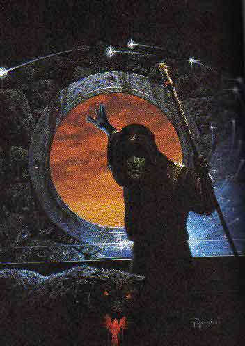
Le verghe magiche possono essere costruite in due dimensioni: verghe corte che misurano circa 70 cm. (si considerano oggetti di dimensioni small) e verghe lunghe che misurano circa 1,50 m. (si considerano oggetti di dimensioni medium). Entrambe possono essere spesse circa 3-6 cm. ed il loro peso varia (anche a secondo del materiale utilizzato) dalle 2 alle 6 libbre. Possono essere di metallo, di legno, di avorio o di osso. Possono essere variamente decorate ed incise.
Tranne in rarissime eccezioni l'energia magica delle verghe è contenuta in cariche magiche che sono consumate al lancio delle magie. Solitamente le verghe possono essere ricaricate a meno che non siano state utilizzate tutte le cariche.
Quando una verga è costruita una verga magica la stessa normalmente possiede 1d8+39 cariche se si tratta di una verga corta (massimo 47 cariche) ed 1d10+40 cariche se si tratta di una verga lunga (massimo 50 cariche).
Le verghe sono solitamente attivate con l'utilizzo di una speciale parola magica che cambia da verga a verga. Senza la conoscenza della parola magica non è possibile utilizzarle.
I materiali utilizzati per la creazione delle verghe e la loro dimensione incidono sulla resistenza delle stesse e possono modificare le possibilità di incantamento come specificato nella seguente tabella:
| MATERIALE | PESO | COSTO | TIRO SALVEZZA ROTTURA | MODIFICATORI E NOTE VARIE |
| Verga Corta di Legno | 2 libbre | 4 monete d'oro | Legno con malus di -1 | -2% possibilità generica di incantamento |
| Verga Corta di Legno e Metallo Dolce | 4 libbre | 8 monete d'oro | Legno con bonus di +1 | -1% possibilità generica di incantamento |
| Verga Corta di Legno e Argento | 3 libbre | 20 monete d'oro | Legno | +1% possibilità generica di incantamento |
| Verga Corta di Legno ed Osso | 4 libbre | 12 monete d'oro | Legno | +1% incantamenti della scuola Necromancy |
| Verga Corta di Legno ed Avorio | 3 libbre | 25 monete d'oro | Legno con bonus di +1 | +2% incantamenti della scuola Necromancy |
| Verga Corta di Metallo Dolce | 5 libbre | 16 monete d'oro | Metallo Dolce | -1% possibilità generica di incantamento |
| Verga Corta di Argento | 4 libbre | 75 monete d'oro | Metallo Dolce con malus di -1 | +2% possibilità generica di incantamento |
| Verga Corta di Osso | 5 libbre | 22 monete d'oro | Metallo Dolce con malus di -1 | +2% incantamenti della scuola Necromancy |
| Verga Corta di Avorio | 4 libbre | 100 monete d'oro | Metallo Dolce | +3% incantamenti della scuola Necromancy |
| Verga Lunga di Legno | 4 libbre | 5 monete d'oro | Legno con malus di -1 | -2% possibilità generica di incantamento |
| Verga Lunga di Legno e Metallo Dolce | 6 libbre | 10 monete d'oro | Legno con bonus di +1 | -1% possibilità generica di incantamento |
| Verga Lunga di Legno e Argento | 5 libbre | 35 monete d'oro | Legno | +1% possibilità generica di incantamento |
| Verga Lunga di Legno ed Osso | 6 libbre | 15 monete d'oro | Legno | +1% incantamenti della scuola Necromancy |
| Verga Lunga di Legno ed Avorio | 5 libbre | 50 monete d'oro | Legno con bonus di +1 | +2% incantamenti della scuola Necromancy |
| ACCESSORI ED IMPLEMENTAZIONI | MODIFICATORI E NOTE VARIE |
| Legno Pregiato [solo per verghe con legno] (+5 g.p. al valore base della verga) | +1% possibilità generica di incantamento |
| Legno Raro [solo per verghe con legno] (+30 g.p. al valore base della verga) | +2% possibilità generica di incantamento |
| Incisioni Runiche (* 2 valore base della verga) | +1% possibilità generica di incantamento |
| Incisioni Runiche di Pregiato Valore Artistico (* 5 valore base della verga) | +3% possibilità generica di incantamento |
| Ornamenti e rifiniture d'oro (+50 g.p. al prezzo finale) | +1% possibilità generica di incantamento |
UTILIZZARE LE VERGHE MAGICHE IN COMBATTIMENTO
Anche se le verghe magiche non sono studiate come armi da guerre le stesse
possono essere utilizzate in combattimento. Indipendentemente dalla tipologia di
verga utilizzata, la forma e dimensione delle
verghe lunghe
le rende utilizzabili come se
fossero
bastoni da guerra (arma
a due mani di dimensioni
medium) mentre la forma e dimensione
delle verghe corte
le rende utilizzabili come se
fossero small mace
(arma
ad una mano di dimensioni
small).
Per tale motivo, per utilizzarle efficacemente in corpo a corpo, occorre
possedere i relativi gradi di conoscenza nell'uso di tali armi.
Se, però, le verghe possiedono dei poteri utilizzabili a tocco (ossia quei
poteri che richiedono un tiro per colpire), poiché per utilizzarli non è
necessario sferrare ottimi colpi ma semplicemente toccare la vittima designata,
quando si
utilizzano i poteri a tocco delle verghe non saranno applicate le penalità
previste per la mancata conoscenza dell'uso dei bastoni da guerra.
Si noti che quando si utilizzano i poteri a tocco delle verghe non sono
provocati danni alla vittima per la bastonata inferta (parimenti non si
applicheranno gli effetti dei tiri critici ed acritici). Ovviamente, se chi
utilizza tale potere possiede gradi di conoscenza nell'uso dei bastoni da
guerra, eventuali bonus al tiro per colpire ed all'iniziativa posseduti potranno
essere utilizzati.

LE DIVERSE TIPOLOGIE DI VERGHE MAGICHE
Le verghe magiche possono differenziarsi in due grandi generi:

Le verghe della stregoneria sono oggetti magici abbastanza comuni e diffusi utilizzabili esclusivamente dagli utenti di magia ed appositamente studiate per convogliare l'energia magica sprigionata da costoro nel lancio degli incantesimi. Gli utenti di magia possono impugnare queste verghe quando utilizzano i loro incantesimi. Per creare una di queste verghe (differenziandola definitivamente dalle verghe incantate) sarà, quindi, necessario preliminarmente incantarla con l'incantamento magico minore Verga della Stregoneria [Minor Enchantment (150 xp, 1000 gp)] selezionando, al contempo, una determinata scuola di magia (o di elemento materiale primario dell'evocazione) sulla quale la verga sarà basata. Il mago, quindi, potrà utilizzare la verga per lanciare qualsiasi suo incantesimo ma potrà usufruire dei benefici magici della verga (anche se dipendenti da Minor Enchantment generici) solo qualora utilizzi incantesimi che siano della stessa scuola di magia primaria dell'oggetto magico. In alcuni casi, inoltre, queste verghe sono fornite di poteri magici propri che il mago può sprigionare utilizzando le cariche della verga. A differenza delle bacchette magiche, però, le verghe della stregoneria non sono strutturate per sprigionare poteri propri ma per convogliare le energie magiche del mago per tale motivo non dispongono quasi mai di effetti magici multipli e/o particolarmente distruttivi.
Quando un utente di magia utilizza una verga della stregoneria per lanciare un
qualsiasi suo incantesimo (anche se la impugna per lanciare magie di scuola
diversa da quella della verga) si utilizzano le seguenti regole:
A)
Se non diversamente
specificato i poteri propri della verga hanno un fattore di
iniziativa pari a +4.
B)
Come per lanciare una magia, per utilizzare i poteri della verga occorre
mantenere concentrazione ed utilizzare componenti somatici e vocali (parola di
attivazione). Perdere la concentrazione farà abortire l'azione di utilizzo della
verga e perdere le cariche utilizzate.
C)
La verga è in grado di catalizzare
l'energia magica del mago che la utilizza. Per questo motivo, lo stesso
potrà lanciare, impugnando la verga della stregoneria, incantesimi che richiedano
l'utilizzo di componenti somatici. La verga, però, rallenta i movimenti
somatici di lancio imponendo
una penalità di +2 al casting time
(penalità riducibile con l'uso dei punti magia). Questa penalità non si applica alle
magie con solo componenti vocali.
D)
Le verghe della stregoneria sono oggetti magici molto sicuri. Quando il mago
utilizza un potere proprio della verga non vi sono concrete possibilità di
fallimento dovute all'oggetto magico (se lancia magie proprio attraverso la verga dovrà, invece,
regolarmente verificare le possibilità di misscast).
POTERI DI INCANALAMENTO DELL'ENERGIA MAGICA
Le verghe della stregoneria possono essere incantate per aiutare il mago nel
lancio delle magie in diverso modo. Questi particolari poteri magici tipici
delle verghe della stregoneria prendono il nome di
poteri di
incanalamento di energia magica.
Questi poteri magici possono essere considerati a tutti gli effetti
Minor Enchantment
che in deroga alle normali regole possono essere cumulativamente inseriti in una
Verga della Stregoneria. Gli effetti più comuni possono essere di
seguito elencati assieme al loro costo e valore in xp. Si noti che, come sopra
specificato per creare una
Verga della Stregoneria
occorre incantarla con il
relativo
Minor Enchantment (150 xp, 1000 gp)
al quale poi potrà aggiungersi il costo degli effetti posseduti considerando
che qualora la verga disponga di più di un effetto magico specifico sarà considerato
pienamente il costo dell'effetto più costoso e solo al 50% il costo degli
effetti secondari (sia in termini di monete d'oro che di punti esperienza). Una verga può agevolmente contenere
anche tutti i seguenti
poteri di
incanalamento di energia magica oltre ad un potere
magico proprio. Si noti, però, che tutti i
poteri di
incanalamento di energia magica
della verga devono essere selezionati
al momento della sua costruzione (regola che non è applicata per gli altri
Minor Enchantment
generici [link] quali quelli relativi al risparmio di energia magica e delle cariche
magiche che potranno essere aggiunti anche successivamente).
RIDUZIONE DELLA
RESISTENZA MAGICA
(+1.500 g.p., +200
xp)
L'utente di magia può abbassare la resistenza magica dei suoi avversari
utilizzando le cariche della verga. In questo modo il mago ridurrà la resistenza
magica della vittima contro la magia lanciata di 1d6+4% al costo di
1 carica per livello di potere della magia che si vuole lanciare. il mago
ridurrà la resistenza magica della vittima contro la magia lanciata di 1d12+8%
al costo di 2 cariche per livello di potere della magia che si vuole lanciare.
In nessun caso la resistenza al magico della vittima può essere ridotta a meno
del 5%.
ABBASSAMENTO
DELLE DIFESE MAGICHE
(+2.000 g.p., +250
xp)
L'utente di magia
può abbassare le difese magiche dei suoi avversari utilizzando le cariche della
verga. In questo modo il mago imporrà all'avversario un
malus di - 1 al tiro salvezza per difendersi
dalla magia lanciata (malus
che si cumulerà a quello eventualmente previsto per la bravura
del mago nella scuola di magia). Il costo in cariche per ottenere tale
effetto è uguale ad
1 carica per livello di potere della magia che si vuole lanciare.
POTENZIAMENTO DI ENERGIA MAGICA
(+2.000 g.p., +250 xp)
L'utente di magia
può potenziare l'energia magica dei propri incantesimi utilizzando le cariche
della verga. Il mago potrà potenziare solo gli incantesimi capaci di produrre
danno diretto, non potendo incrementare le magie che producono danno
indirettamente come, ad esempio, tutte quelle della scuola conjuration/summoning
(in quanto in quest'ultime l'energia magica è utilizzata per richiamare ad
esistenza qualcosa di predeterminato dalla magia che non può subire variazioni
attraverso l'uso di questo potere). Il mago, inoltre, non potrà potenziare
incantesimi già potenziati in altro modo, come ad esempio attraverso l'uso della
magia Augmentation I (scuola Alteration, terzo livello di potere) od attraverso
l'uso del relativo talento del Magister Formulae. Utilizzando 1 carica il suo
incantesimo produrrà il 15 % dei danni totali in più (arrotondando per eccesso).
Utilizzando 2 cariche il suo incantesimo produrrà il 25 % dei danni totali in
più (arrotondando per eccesso). Utilizzando 3 cariche il suo incantesimo
produrrà il 33 % dei danni totali in più (arrotondando per eccesso). Per
potenziare incantesimi di 4° - 5° livello di potere aggiungere 1 carica al costo
totale. Per potenziare incantesimi di 6° - 7° livello di potere aggiungere 2
cariche al costo totale. Per potenziare incantesimi di 8° - 9° livello di potere
aggiungere 3 cariche al costo totale.
INCREMENTO DEL
RAGGIO D'AZIONE
(+2.000 g.p., +250 xp)
L'utente di magia
può incrementare il raggio
d'azione dei propri incantesimi utilizzando le cariche
della verga. Il mago non può influenzare incantesimi aventi raggio pari a "0"
oppure pari a "tocco". Il mago, inoltre, non potrà influenzare incantesimi il
cui raggio d'azione risulta già potenziato in altro modo, come ad esempio
attraverso l'uso della magia Far Reaching I (scuola Alteration, terzo livello di
potere) od attraverso l'uso del relativo talento del Magister Formulae.
Utilizzando 1 carica il raggio d'azione del suo incantesimo sarà aumentato del
20% (arrotondando per eccesso). Utilizzando 2 cariche il raggio d'azione del suo
incantesimo sarà aumentato del 33% (arrotondando per eccesso). Utilizzando
3 cariche il raggio d'azione del suo incantesimo sarà aumentato del 50%
(arrotondando per eccesso). Per potenziare incantesimi di 4° - 5° livello di
potere aggiungere 1 carica al costo totale. Per potenziare incantesimi di 6° -
7° livello di potere aggiungere 2 cariche al costo totale. Per potenziare
incantesimi di 8° - 9° livello di potere aggiungere 3 cariche al costo totale.
INCREMENTO DELLA DURATA (+2.500 g.p., +300 xp)
L'utente di magia
può aumentare la durata dei propri incantesimi utilizzando
le cariche della verga. Ai fini di ogni arrotondamento le unità temporali (round,
turni od ore) saranno considerate quelle espresse nella durata dell'incantesimo
senza possibilità di alcun loro frazionamento in unità minori. Il potere
funziona su qualsiasi incantesimo non abbia durata istantanea né pari o
superiore alle 24 ore. In ogni caso nessun incantesimo potrà durare, per l'uso
di questo potere, più di 24 ore. Il mago non potrà potenziare incantesimi
la cui durata è già stata potenziata in altro modo, come ad esempio attraverso
l'uso della magia Far Reaching I (scuola Alteration, terzo livello di potere) od
attraverso l'uso del relativo talento del Magister Formulae. Utilizzando 1
carica la durata della magia aumenterà del 20% (arrotondando per eccesso).
Utilizzando 2 cariche la durata della magia aumenterà del 33% (arrotondando per
eccesso). Utilizzando 3 cariche la durata della magia aumenterà del 50%
(arrotondando per eccesso). Per potenziare incantesimi di 4° - 5° livello
di potere aggiungere 1 carica al costo totale. Per potenziare incantesimi di 6°
- 7° livello di potere aggiungere 2 cariche al costo totale. Per potenziare
incantesimi di 8° - 9° livello di potere aggiungere 3 cariche al costo totale.
SOSTITUZIONE DI ENERGIA MAGICA
(+2.500 g.p., +300 xp)
L'utente di magia può sostituire ai propri punti magia le cariche della verga.
E' comunque necessario che il mago utilizzi almeno il 50 % (arrotondato per
eccesso) dei punti magia necessari per lanciare la magia. Per calcolare
l'ammontare di cariche richieste per il lancio della magia si dividano per due i
punti magia sostituiti e si moltiplichi il risultato
per un moltiplicatore pari a 0,5 + 0,5 per livello di potere
dell'incantesimo lanciato (arrotondando il risultato finale per
eccesso).
Per fare un esempio: se un mago decide di lanciare una regolare
fireball
(12 punti magia) potrà utilizzare fino a 6 punti presi dalla verga. Il costo per
sostituire questi 6 punti sarà appunto pari a 6 cariche della verga (6 diviso 2,
moltiplicato per 2); se un mago decide di lanciare un
magic missile (12
punti magia) potrà utilizzare fino a 6 punti presi dalla verga. Il costo per
sostituire questi 6 punti sarà appunto pari a 3 cariche della verga (6 diviso 2,
moltiplicato per 1).
ELEVAMENTO DEL LIVELLO DI LANCIO
(+2.500 g.p., +300
xp)
L'utente di magia
può elevare il livello di lancio dei propri incantesimi utilizzando le cariche
della verga. Utilizzando 1 carica il suo incantesimo sarà considerato come se
fosse stato lanciato ad 1 livello di lancio superiore; utilizzando 3 cariche il
suo incantesimo sarà considerato come se fosse stato lanciato a 2 livelli di
lancio superiore (è possibile cumulare questo con l'utilizzo di punti magia per
elevare ulteriormente il livello di lancio, ma non è possibile comunque superare
il limite massimo di 4 livelli superiori di lancio rispetto al livello di
esperienza del mago). Per potenziare incantesimi di 4° - 5° livello di potere
aggiungere 1 carica al costo totale. Per potenziare incantesimi di 6° - 7°
livello di potere aggiungere 2 cariche al costo totale. Per potenziare
incantesimi di 8° - 9° livello di potere aggiungere 3 cariche al costo totale.
Esclusivamente il costo in
monete d'oro (inteso come
valore medio di mercato) di una verga magica dipenderà anche dalla
situazione relative alle sue cariche. In particolare
si applicheranno le seguenti riduzioni
percentuali unicamente al valore complessivo dei poteri magici a cariche ed alla
metà del valore intrinseco della verga (500 monete d'oro).
Tale riduzione non si applicherà dunque all'altra metà del valore intrinseco
della verga ed al valore dei poteri magici che non utilizzano cariche. Si consideri,
quindi, il seguente schema:
Il numero di cariche residue è superiore all'80% =
ridurre il valore di
mercato del 10 %
Il numero di cariche residue è compreso tra il 60% e l' 80% =
ridurre il valore di mercato del 20 %
Il numero di cariche residue è compreso tra il 40% ed il 60% =
ridurre il valore di
mercato del 30 %
Il numero di cariche residue è compreso tra il 10% ed il 40% =
ridurre il valore di
mercato del 40 %
Il numero di cariche residue è inferiore al 10% =
ridurre il valore di
mercato del 50 %
Se la verga è già stata ricaricata ridurre del 3% il suo valore finale per
ogni ricarica effettuata fino ad un massimo di -30% qualora la bacchetta sia
stata ricaricata 10 o più volte.
Per calcolare il valore di mercato di una verga che non può essere più ricaricata ridurre del
50% il valore finale, dividere il risultato per 50 e moltiplicarlo per il numero di
cariche residue.
POTERI MAGICI PROPRI


|
Rapid Casting (Lesser Enchantment +5.000 g.p., +500 xp) |
|
Si noti che con questo
potere magico unico possono essere incantate solo le verghe della stregoneria
che abbiamo come scuola di magia base Alteration. Quando un mago utilizza questa
verga per lanciare i propri incantesimi, costui potrà provare a velocizzare
magicamente i movimenti e le parole necessarie al lancio delle formule magiche al
fine di riuscire a lanciare in un medesimo round di gioco due incantesimi. Per
poter provare ad effettuare la prova il mago dovrà rispettare le seguenti
regole: |


|
Rod of Globe of Light (Superior Minor Enchantment +2.000 g.p., +250 xp) |
|
|
|
Utilizzando 1 carica della
verga la parte superiore della stessa viene circondata da un globo di luce
bianca. La verga illuminerà di fredda luce bianca un'area di 9 metri di raggio
(si consideri come la luce di una lanterna o quella prodotta dalla magia
light). L'effetto dura fino a che il mago non decide di spegnere la
luminosità della verga o, comunque, fino a che non siano passate 24 ore
dall'accensione della stessa. Per spegnere la luminosità il mago deve utilizzare
le stesse regole utilizzate per attivare il potere proprio della verga con
l'unica eccezione consistente nel non dover spendere alcuna carica per lo
spegnimento. Utilizzando 2 cariche della verga l'intensità della luce sarà più forte e la verga illuminerà un'area di 12 metri di raggio (si consideri come se fosse luce del giorno oppure luce prodotta dalla magia continual light). |
|
Rod of Burning Flames (Lesser Enchantment +5.000 g.p., +500 xp) |
|
|
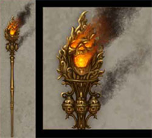 |
Si noti che con questo potere magico unico possono essere incantate solo le verghe della stregoneria che abbiamo come scuola di magia base Evocation, Piano di riferimento interno del Fuoco. Quando questa verga viene impugnata da un mago lo stesso potrà decidere di far divampare costantemente e per un periodo di tempo indeterminato fiamme nella parte superiore della stessa. L'attivazione di questo potere richiede la concentrazione del mago, componenti verbali (parola di attivazione) e somatici nonché un casting time pari ad 1 round ma non consuma alcuna carica della verga. Quando la verga è infiammata la stessa illuminerà con luce giallastra e rossa (-1 al tiro per colpire) ad una distanza di 6 metri dal mago. Alla fine di ogni round il mago potrà con una free action far spegnere la verga. Se, inoltre, per qualsiasi motivo il mago non impugna più la verga la stessa si spegnerà immediatamente. Quando la verga è fiammeggiante la stessa può essere utilizzata per attaccare in corpo a corpo provocando 5 danni da fuoco magico alla creatura toccata (si tratta di un vero e proprio potere magico utilizzabile a tocco). Inoltre, sempre quando la verga è fiammeggiante, il mago può, utilizzando 1 carica della stessa, scagliare dalla verga una fiammata su una creatura che si trovi in corpo a corpo con lui. L'utilizzo di questo potere necessita di concentrazione ed è del tutto assimilabile al lancio di un incantesimo con componenti verbali (parola di attivazione) e somatici avente casting time pari a +4. La vittima di questo attacco subirà 1d6+4 danni da fuoco magico dimezzabili superando un tiro salvezza su riflessi. Utilizzando, invece, 2 cariche della verga, il mago potrà scagliare la medesima fiammata su un bersaglio che si trovi entro 9 metri di distanza dallo stesso. |


|
Rod of Negative Flames (Lesser Enchantment +5.000 g.p., +500 xp) |
|
|
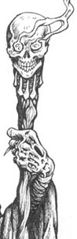 |
Si noti che con questo potere magico unico possono essere incantate solo le verghe della stregoneria che abbiamo come scuola di magia base Necromancy. Quando questa verga viene impugnata da un mago lo stesso potrà decidere di far divampare costantemente e per un periodo di tempo indeterminato fiamme nella parte superiore della stessa. L'attivazione di questo potere richiede la concentrazione del mago, componenti verbali (parola di attivazione) e somatici nonché un casting time pari ad 1 round ma non consuma alcuna carica della verga. Le fiamme che divampano dalla verga sono di energia negativa di colore bluastro. Queste fiamme non illuminano e non sono visibili al buio né producono alcun calore. Alla fine di ogni round il mago potrà con una free action far spegnere la verga. Se, inoltre, per qualsiasi motivo il mago non impugna più la verga la stessa si spegnerà immediatamente. Quando la verga è fiammeggiante la stessa può essere utilizzata per attaccare in corpo a corpo provocando 5 danni da energia negativa alla creatura toccata (si tratta di un vero e proprio potere magico utilizzabile a tocco). Inoltre, sempre quando la verga è fiammeggiante, il mago può, utilizzando 1 carica della stessa, scagliare dalla verga una fiammata su una creatura che si trovi in corpo a corpo con lui. L'utilizzo di questo potere necessita di concentrazione ed è del tutto assimilabile al lancio di un incantesimo con componenti verbali (parola di attivazione) e somatici avente casting time pari a +4. La vittima di questo attacco subirà 1d6+4 danni da energia negativa dimezzabili superando un tiro salvezza su riflessi. Utilizzando, invece, 2 cariche della verga, il mago potrà scagliare la medesima fiammata su un bersaglio che si trovi entro 9 metri di distanza dallo stesso. |

|
Verga del Controllo Spazio/Temporale (Lesser Enchantment +5.000 g.p., +500 xp) |
|
|
|
Si noti che con questo potere magico unico possono essere incantate solo le verghe della stregoneria che abbiamo come scuola di magia base Summoning. Questo potere magico proprio consente al mago di controllare meglio le magie della scuola Summoning che effettuino richiamo spazio/temporali. Questo potere, infatti, non aiuta in nessun modo il mago nelle magie di richiamo reale. In particolare, quando il mago lancia una qualsiasi magia di summonazione spazio/temporale costui potrà decidere di lanciarla attraverso la verga per farla controllare dal potere magico. Quando effettua tale scelta la magia non conterà ai fini di determinare la capacità di controllo delle creature richiamate magicamente fino a che il mago impugna la verga della stregoneria. Qualora, per qualsiasi motivo, il mago smetta di impugnare la verga questo beneficio verrà meno immediatamente ed il mago, se del caso, dovrà effettuare le prove di controllo come se avesse lanciato la magia di summonazione della quale la verga manteneva il controllo nel momento in cui smette di impugnarla. Il beneficio del potere della verga può essere applicato ad una sola magia di summonazione spazio/temporale alla volta per cui il mago dovrà attendere la fine della magia che ha posto sotto il controllo della verga (o farla terminare anticipatamente) per metterne un'altra sotto il controllo della verga. |
|
Verga del Mantenimento Spazio/Temporale (Lesser Enchantment +5.000 g.p., +500 xp) |
|
|
|
Si noti che con questo potere magico unico possono essere incantate solo le verghe della stregoneria che abbiamo come scuola di magia base Summoning. Questo potere magico proprio consente al mago di sostituire il potere magico della verga al proprio nel mantenimento della durata delle magie della scuola Summoning che effettuino richiamo spazio/temporali dei primi quattro livelli di potere e che abbiano una durata calcolata in round. Questo potere, infatti, non aiuta in nessun modo il mago nelle magie di richiamo reale. In particolare, quando il mago lancia una qualsiasi magia di summonazione spazio/temporale costui potrà decidere di lanciarla attraverso la verga per farla mantenere dal potere magico. Il mago dovrà, quindi, utilizzare 1 carica della verga per ogni livello di potere dell'incantesimo lanciato. Quando effettua tale scelta la magia durerà fino a che il mago impugna la verga della stregoneria. Qualora, per qualsiasi motivo, il mago smetta di impugnare la verga la magia terminerà immediatamente (anche prima di quello che sarebbe stato il termine della sua durata qualora fosse stata lanciata senza utilizzare il potere della verga). In ogni caso, la magia terminerà una volta trascorse 3 ore dal momento del lancio della stessa. Ovviamente il mago può far terminare in ogni momento la durata dell'incantesimo che ha lanciato tramite la verga. Il beneficio del potere della verga può essere applicato ad una sola magia di summonazione spazio/temporale alla volta per cui il mago dovrà attendere la fine della magia che ha posto sotto il controllo della verga (o farla terminare anticipatamente) per lanciarne un'altra utilizzando questo medesimo potere. |

Le verghe incantate che sono oggetti magici rari utilizzabili non esclusivamente dagli utenti di magia ma da qualsiasi classe di personaggio (in alcune occasioni esclusivamente da una singola categoria di creature). Queste verghe costituiscono oggetti magici particolari in grado di produrre i più disparati effetti magici (solitamente possiedono un unico effetto) ma nella grande maggioranza dei casi si tratta di effetti legati al loro uso in combattimento. Ci si rimanda, quindi, alla descrizione della singola verga incantata. Queste verghe non possono essere impugnate dagli utenti di magia e dai sacerdoti quando lanciano incantesimi avente componente somatico.
| OGGETTO | Rod of Trap Detection |
| ORIGINE | MAGICA |
| POTENZA | Lesser Enchantment (500 xp, 5.000 gp) |
| SCUOLA DI MAGIA | DIVINATION |
|
DESCRIZIONE
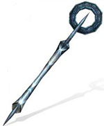 |
Questa Verga Incantata può essere utilizzata da creature appartenenti a qualsiasi classe o razza. Quando viene impugnata e viene utilizzata una sua carica magica, attraverso un'azione complessa avente fattore iniziativa pari a +4 che richiede componenti somatici e vocali (pronunciare la parola magica di attivazione) ma non necessita del mantenimento della concentrazione, la verga inizierà a vibrare nelle mani dell'utilizzatore qualora una qualsiasi trappola sia presente entro 12 metri dalla stessa. Una volta attivata la verga l'effetto magico durerà per 1 turno nel corso del quale chi la impugna può spostarsi per controllare la presenza di trappole nelle vicinanze. Per trappole dovranno intendersi sia trappole meccaniche che trappole di tipo magico, nonché trappole rudimentali (snares) quali fossi coperti, reti e lacci intrappolanti. Si noti che la verga si limiterà a vibrare senza indicare in alcun modo il luogo esatto di presenza della trappola né la tipologia della stessa. |
| OGGETTO | Venomous Rod |
| ORIGINE | DIVINA - FORZE OSCURE - IL SERPENTE |
| POTENZA | Lesser Enchantment (600 xp, 6.000 gp) |
| SCUOLA DI MAGIA | CONJURATION |
|
DESCRIZIONE
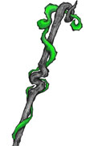 |
Questa
Verga Incantata
può essere impiegata
da creature
appartenenti a qualsiasi classe o razza e deve essere utilizzata
toccando la creatura sulla quale si desidera sprigionare l'effetto
magico. E' necessario, quindi, effettuare un normale attacco superando
un tiro per colpire. Si tratta di un'azione d'attacco complessa avente
fattore iniziativa pari a quello della verga utilizzata come arma (+3
per la verga corta, +4 per la verga lunga) alla quale aggiungere la
componente vocale rappresentata dalla parola magica di attivazione. Si
noti che le creature che non sono fedeli del culto del Serpente,
impiegando più tempo a sprigionare l'energia magica contenuta nella
verga, ottengono una penalità di +2 a tale fattore iniziativa. Quando
viene utilizzata la verga colpendo il bersaglio (qualora chi utilizza la
verga non riesce a toccare con successo il bersaglio non sarà utilizzata
alcuna carica magica) sarà spesa 1 carica magica e si sprigionerà
l'effetto magico. Il corpo del bersaglio sarà, quindi, avvelenato con il
seguente veleno: |
| OGGETTO | Rod of Holy Turning |
| ORIGINE | DIVINA - FRATELLANZA DELLA LUCE - TANATOS, LOKY |
| POTENZA | Lesser Enchantment (700 xp, 7.000 gp) |
| SCUOLA DI MAGIA | NECROMANCY |
|
DESCRIZIONE
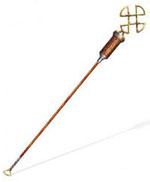 |
Questa Verga Incantata contiene una carica di energia positiva utilizzabile nella lotta contro gli esseri non-morti. In particolare, questa verga deve essere utilizza toccando la creatura non morta sulla quale si desidera sprigionare l'effetto magico. E' necessario, quindi, effettuare un normale attacco superando un tiro per colpire. Si tratta di un'azione d'attacco complessa avente fattore iniziativa pari a quello della verga utilizzata come arma (+3 per la verga corta, +4 per la verga lunga) alla quale aggiungere la componente vocale rappresentata dalla parola magica di attivazione. Si noti che le creature di indole neutrale o malvagia (neutral ed evil) impiegando più tempo a sprigionare l'energia positiva ottengono una penalità di +1 a tale fattore iniziativa. Quando viene utilizzata la verga colpendo il bersaglio (qualora chi utilizza la verga non riesce a toccare con successo il bersaglio non sarà utilizzata alcuna carica magica) sarà spesa 1 carica magica e si sprigionerà l'effetto magico. Il bersaglio non-morto sarà, quindi, sottoposto ad un tentativo di scaccio avente un potenziale intrinseco pari a +7 se la verga è utilizzata da una creatura di indole buona (good), pari a +6 se la verga è utilizzata da una creatura di indole neutrale (neutral) e pari a +5 se la verga è utilizzata da una creatura di indole malvagia (evil). Utilizzando 1 carica magica supplementare si otterrà un ulteriore bonus di +2 al potenziale intrinseco dello scaccio effettuato dalla verga. Si seguiranno quindi tutte le regole previste dallo scacciare i non-morti (link) per determinare il valore concreto dello scaccio ed i suoi effetti (sarà chi utilizza la staffa a scegliere l'effetto di scaccio desiderato, in caso sia scelto un effetto di direct damage lo scaccio si considererà come effettuato da un chierico di livello di esperienza pari al bonus utilizzato per il potenziale intrinseco dello scaccio stesso). Si noti che, ogni volta che questa verga è utilizzata da una creatura di indole malvagia (evil) costei dovrà tirare 1d20 dopo aver toccato il bersaglio; con un risultato pari ad 1 l'effetto magico non si verificherà ma le cariche magiche si considereranno come utilizzate. Questo oggetti magico può essere ricaricato, a meno che non abbia utilizzato completamente tutte le sue cariche magiche. Per ricaricare la verga è necessario posizionarla, all'interno di un tempio, nei pressi di un altare attivo di un culto della Fratellanza della Luce e cospargerla dei necessari ingredienti magici (polvere d'oro, di cristallo di roccia e di diamante). La verga dovrà restare sull'altare per 60 giorni ininterrotti e sulla stessa andranno versate 80 monete d'oro di ingredienti magici per ogni carica che si vuole recuperare. Il procedimento di ricarica è sicuro ma se, per qualsiasi motivo, la staffa è rimossa dall'altare prima dello scadere dei 60 giorni il procedimento andrà interamente ripetuto e gli ingredienti dovranno essere riacquistati. |
| OGGETTO | Rod of Lesser Paralysis |
| ORIGINE | MAGICA |
| POTENZA | Lesser Enchantment (750 xp, 7.500 gp) |
| SCUOLA DI MAGIA | CHARM |
|
DESCRIZIONE
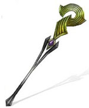 |
Questa Verga Incantata può essere utilizzata unicamente dai personaggi appartenenti alle macroclassi dei sacerdoti e degli utenti di magia. Per usare questa verga occorre che la si impugni nella mano principale, che si effettuino movimenti affini a quelli effettuati nel corso del lancio delle magie (che si considerano a tutti gli effetti equiparabili componenti somatici degli incantesimi) e che si pronunci la parola magica di attivazione (che si considera il componente verbale) ma non occorre il mantenimento della concentrazione. Il fattore di iniziativa del potere della verga è pari a +4. Come per il lancio delle magie, inoltre, l'attivazione del potere magico della verga deve avvenire dall'inizio del round. Orbene chi impugna la verga potrà utilizzare il suo potere magico , spendendo una carica magica, su una creatura vivente (quindi ad esclusione di non-morti e di costruiti) originaria del primo piano materiale (si escludano quindi tutte le creature planari) che si trovi entro 18 metri di distanza e sia per costui visibile (con le medesimi restrizioni e possibilità di fallimento utilizzate nel corso del lancio di un incantesimo). La vittima, dunque, dovrà superare un tiro salvezza su mente. Se il tiro salvezza riesce la vittima non subirà alcun effetto. Se il tiro salvezza fallisce la vittima resterà paralizzata (hold), senza poter parlare o muoversi, anche se cosciente di quello che le accade intorno. A partire dalla fine del round successivo a quello di utilizzo della verga ed alla fine di ogni consecutivo round, la creatura paralizzata avrà diritto ad effettuare un nuovo tiro salvezza su mente per liberarsi definitivamente dagli effetti dell'incantamento. Se, infatti, la creatura riuscirà a superare uno di questi tiri salvezza, l'effetto magico terminerà definitivamente nei suoi confronti. In ogni caso, l'effetto magico terminerà una volta trascorsi 6 round dall'attivazione dell'incantamento. Si noti che se per qualsiasi motivo, una volta iniziato l'utilizzo dell'incantamento, si fallisce nell'utilizzo o si abortisce l'azione la carica magica si considererà comunque utilizzata. |
| OGGETTO | Rod of Electrification |
| ORIGINE | MAGICA |
| POTENZA | Lesser Enchantment (750 xp, 7.500 gp) |
| SCUOLA DI MAGIA | EVOCATION Lightning |
|
DESCRIZIONE
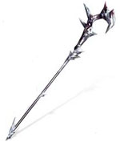 |
Questa
Verga Incantata
può essere utilizzata
da creature
appartenenti a qualsiasi classe o razza. Quando viene impugnata la
stessa può essere utilizzata in due diverse modalità: |
| OGGETTO | Rod of Cold |
| ORIGINE | MAGICA |
| POTENZA | Lesser Enchantment (750 xp, 7.500 gp) |
| SCUOLA DI MAGIA | EVOCATION Ice |
|
DESCRIZIONE
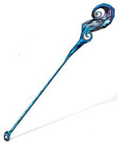 |
Questa
Verga Incantata
può essere utilizzata
da creature
appartenenti a qualsiasi classe o razza. Quando viene impugnata la
stessa può essere utilizzata in due diverse modalità: |
| OGGETTO | Rod of Flames |
| ORIGINE | MAGICA |
| POTENZA | Lesser Enchantment (750 xp, 7.500 gp) |
| SCUOLA DI MAGIA | EVOCATION Fire |
|
DESCRIZIONE
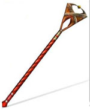 |
Questa
Verga Incantata
può essere utilizzata
da creature
appartenenti a qualsiasi classe o razza. Quando viene impugnata la
stessa può essere utilizzata in due diverse modalità: |
| OGGETTO | Rod of Parrying |
| ORIGINE | MAGICA |
| POTENZA | Lesser Enchantment (750 xp, 7.500 gp) |
| SCUOLA DI MAGIA | ABJURATION |
|
DESCRIZIONE
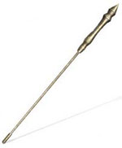 |
Questa Verga Incantata può essere utilizzata da creature appartenenti a qualsiasi classe o razza. Può ricevere questo incantamento unicamente una verga lunga (le verghe corte non possono essere incantate in questo modo). Questa verga non utilizza cariche magiche e non necessita di essere attivata con una parola magica di attivazione. Per poter essere utilizzata occorre che chi impugna la verga effettui normali azioni di combattimento utilizzando la verga a due mani. In questo caso la magia contenuta nella verga farà in modo che la stessa provi automaticamente a deflettere il primo attacco che chi la impugna riceve e che potrebbe essere bloccato utilizzando le regole dell'arte di combattimento "Arte del Deflettere i Colpi". In particolare la verga avrà da 1 a 6 possibilità di deflettere tale attacco. Si noti che questa verga non donando la conoscenza dell'arte di combattimento non permette a chi la utilizza di migliorare le possibilità utilizzando il colpo di combattimento "deflessione migliorata". Se, inoltre, chi utilizza questa verga possiede l'arte di combattimento "Arte del Deflettere i Colpi" non potendosi cumulare gli effetti previsti dovrà decidere nella fase delle intenzioni se usare la propria arte o il potere magico della verga. Come su menzionato, questo potere magico non permette di selezionare l'attacco da deflettere ma la verga proverà a deflettere ogni round (in caso di attacchi simultanei si selezionerà a sorte) il primo attacco in arrivo contro chi la impugna che secondo le regole della richiamata arte di combattimento risulti possibile deflettere. Questa verga, inoltre, ottiene un bonus costante di +3 a tutti i suoi tiri salvezza contro rottura (bonus comprensivo di quello ottenuto per l'incantamento posseduto). Qualora, inoltre, questa verga sia utilizzata per effettuare una manovra di combattimento di "parata" il fattore parata della stessa sarà considerato pari a 4 (contro i normali 2 punti di fattore parata di una normale staffa). |
| OGGETTO | Rod of the Serpent |
| ORIGINE | DIVINA - FORZE OSCURE - IL SERPENTE |
| POTENZA | Superior Enchantment (1.250 xp, 12.500 gp) |
| SCUOLA DI MAGIA | SUMMONING |
|
DESCRIZIONE
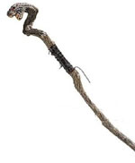 |
Questa
Verga Incantata
può
essere utilizzata unicamente dai fedeli del Serpente appartenenti a
qualsiasi classe di personaggio. L'attivazione della verga richiede
un'azione complessa dalla durata dell'intero round del tutto
assimilabile al lancio di un incantesimo avente componenti somatici,
verbali (preghiera rivolta alla divinità) e materiale (la medesima
verga) ma che non richiede il mantenimento della concentrazione. Questa
verga non utilizza cariche magiche ma può essere attivata una volta per
flusso di energia divina del dio Serpente. Quando viene attivata la
verga si trasformerà in un serpente gigante scelto dall'utilizzatore
tra: |
| OGGETTO | Rod of Healing |
| ORIGINE | DIVINA - FRATELLANZA DELLA LUCE - TANATOS, LOKY, ARLINIR, BALILIA |
| POTENZA | Greater Enchantment (1.500 xp, 15.000 gp) |
| SCUOLA DI MAGIA | NECROMANCY |
|
DESCRIZIONE
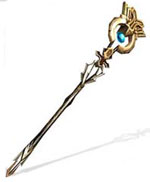 |
Questa Verga Incantata contiene una fortissima carica di energia positiva utilizzare per curare magicamente le ferite e può essere utilizzata da creature appartenenti a qualsiasi classe o razza. In particolare, questa verga deve essere utilizza toccando la creatura che deve curata (in situazioni di combattimento, quindi, chi la utilizza deve effettuare un normale attacco superando il relativo tiro per colpire). L'attivazione della verga rappresenta un'azione complessa avente fattore iniziativa pari a quello della verga utilizzata come arma (+3 per la verga corta, +4 per la verga lunga) alla quale occorre aggiungere la componente vocale rappresentata dalla parola magica di attivazione. Si noti che le creature di indole neutrale o malvagia (neutral ed evil) impiegando più tempo a sprigionare l'energia positiva ottengono una penalità di +1 a tale fattore iniziativa. Quando viene utilizzata la verga dovrà essere selezionato il numero di cariche che deve essere utilizzato (qualora chi utilizza la verga non riesce a toccare con successo il bersaglio non sarà utilizzata alcuna carica magica). L'utilizzo di 1 carica magica sprigionerà energia sufficiente a curare 1d6 punti ferita; l'utilizzo di 2 cariche magiche sprigionerà energia sufficiente a curare 2d6 punti ferita; l'utilizzo di 3 cariche magiche sprigionerà energia sufficiente a curare 3d6 punti ferita. Questo effetto magico, assimilabile in tutto e per tutto ad una cura magica, non avendo natura rigenerativa non permette di curare le ferite prodotte dall'acido, inoltre, non avrà alcun effetto sulle creature inanimate (si pensi ad una comune pianta) e sulle creature non dotate di un corpo organico basato sull'energia positiva (si pensi, ad esempio, alla categoria dei costruiti ed agli elementali). Infine, le creature la cui essenza si basa sull'energia negativa (si pensi ad i non-morti) non solo non riceveranno alcun beneficio dalla sottoposizione a questo effetto magico ma subiranno un pari ammontare di danni per l'irradiamento di energia positiva per loro letale. Si noti che, ogni volta che questa verga è utilizzata da una creatura di indole malvagia (evil) costei dovrà tirare 1d20 dopo aver toccato il bersaglio; con un risultato pari ad 1 l'effetto magico non si verificherà ma le cariche magiche si considereranno come utilizzate. Questo oggetti magico può essere ricaricato, a meno che non abbia utilizzato completamente tutte le sue cariche magiche. Per ricaricare la verga è necessario posizionarla, all'interno di un tempio, nei pressi di un altare attivo di un culto della Fratellanza della Luce e cospargerla dei necessari ingredienti magici (polvere d'oro, di cristallo di roccia e di diamante). La verga dovrà restare sull'altare per 60 giorni ininterrotti e sulla stessa andranno versate 175 monete d'oro di ingredienti magici per ogni carica che si vuole recuperare. Il procedimento di ricarica è sicuro ma se, per qualsiasi motivo, la staffa è rimossa dall'altare prima dello scadere dei 60 giorni il procedimento andrà interamente ripetuto e gli ingredienti dovranno essere riacquistati. |